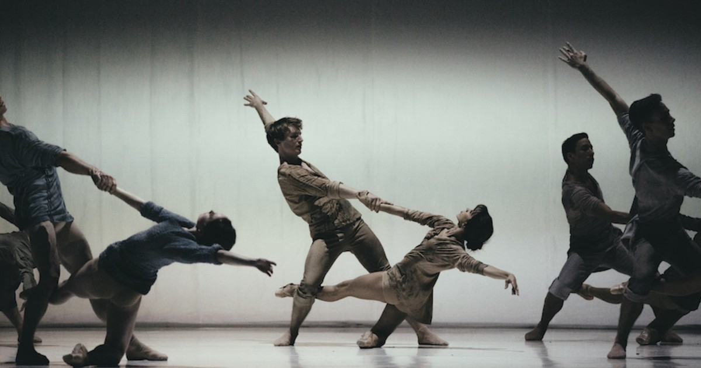

|
IMPACTOS SOCIAIS DO DIA DA DANÇA
- As celebrações do Dia da Dança são mais do que promover artes e cultura, possuindo um impacto significativo na sociedade, ao promover a inclusão e a diversidade cultural.
- A dança é uma forma de expressão acessível a todos, independentemente da capacidade física ou da formação cultural.

- Além disso, a dança pode beneficiar sua saúde mental e emocional e melhorar seu bem-estar e qualidade de vida.
- O Dia da Dança é também uma oportunidade para usar a dança como ferramenta de transformação e inclusão e para destacar iniciativas sociais que promovam a igualdade e a justiça social. Através da dança, você pode conscientizar sobre as questões sociais e lutar por mudanças positivas na sociedade.
- Logo, esse dia não é apenas uma celebração, mas uma forma de fomentar o impacto social e promover mudanças positivas no mundo.

|
|